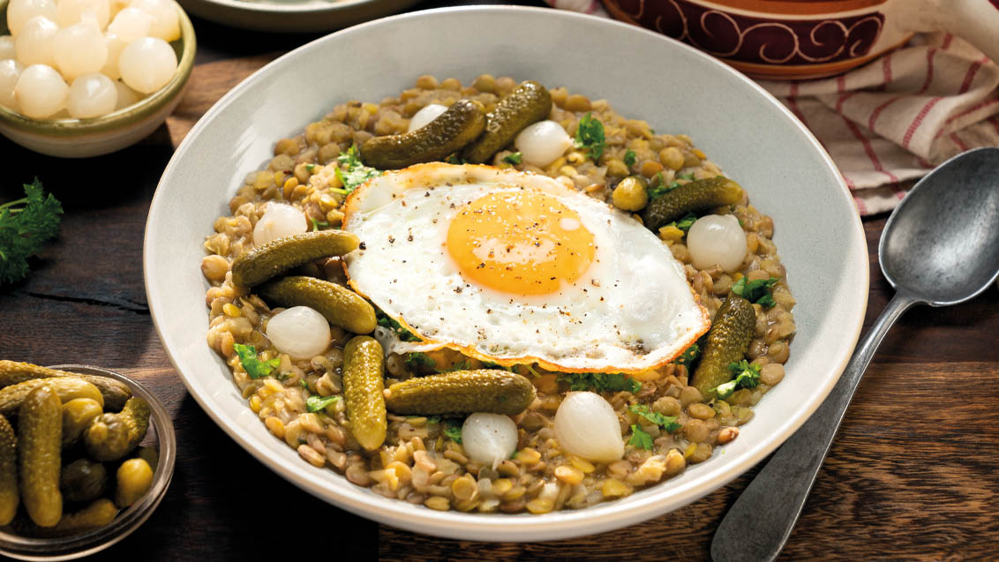

Tradiční český pokrm s kyselou chutí čočky podávaný se sázenými vejci a kyselými okurkami.
Čočku propláchneme a krátce namočíme. Když nabobtná, uvaříme ji doměkka.
Uvařenou čočku scedíme, ale vodu nevyléváme, budeme ji ještě potřebovat.
Cibuli oloupeme, nakrájíme na drobné kostičky a na tuku osmažíme dozlatova.
Pak cibuli zaprášíme moukou, chvíli mícháme a zalijeme scezenou vodou z čočky. Přilijeme ocet dle chuti a omáčku povaříme zhruba 20 minut.
Nakonec vsypeme uvařenou čočku, osolíme podle chuti.
Na pánvi připravíme sázená vejce a čočku podáváme s kyselými okurkami a vejci.